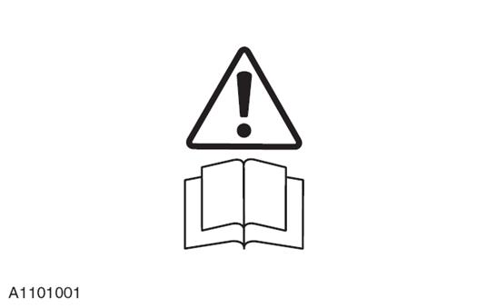
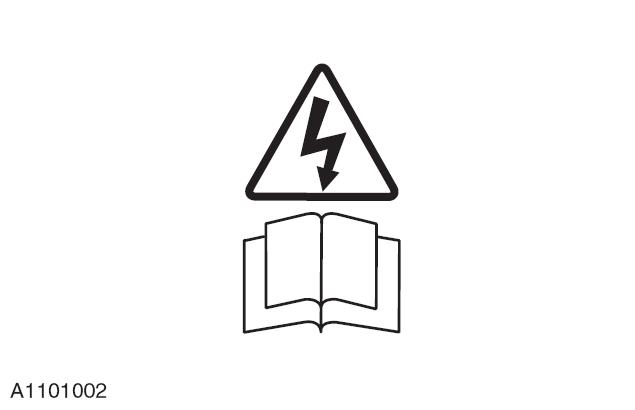
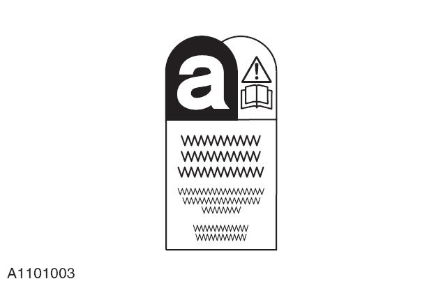
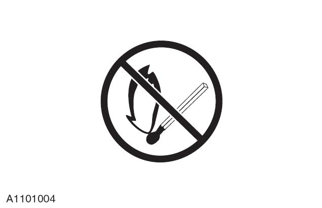
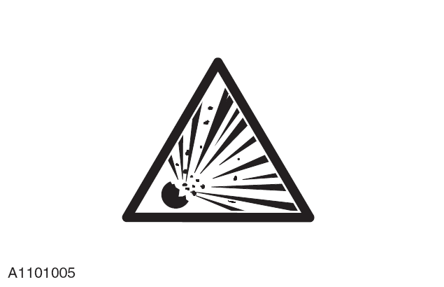
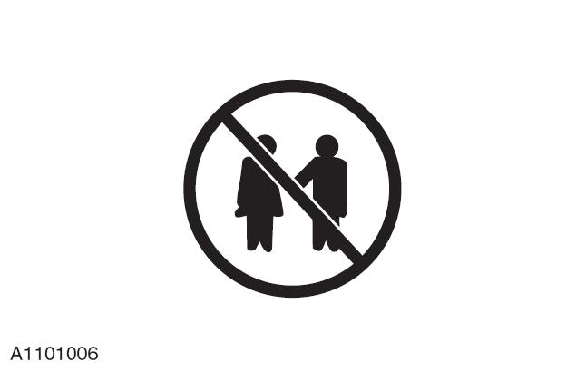

Многие операции, связанные с техническим обслуживанием и ремонтом автомобилей, представляют угрозу и опасность для здоровья человека. Ниже перечислены многие опасные операции, а также связанные с ними опасные материалы и оборудование. Следует обратить особое внимание на следующие опасные материалы.
Приведенный список не является исчерпывающим, поэтому при выполнении реальных операций безопасность и здоровье всегда должны быть на первом месте.
Перед использованием любого продукта следует ознакомиться с паспортом безопасности материала, предоставленным производителем или поставщиком этого продукта.
Едкая кальцинированная сода, серная кислота.
Электролит и чистящие материалы.
Вещества, обладающие раздражающим и разъедающим действием на кожу, глаза, нос, горло, одежду; легковоспламеняющиеся материалы; вещества, способные разрушать обычную защитную одежду.
Следует избегать попадания таких веществ на кожу, в глаза и на одежду. Необходимо носить подходящую защитную одежду, защитные перчатки и очки. Не вдыхать кислотный туман. Вблизи рабочего места следует держать средства для промывания глаз, чистую воду и мыло для немедленного использования в случае несчастного случая.
Разместить знак "Опасность для глаз".
Легковоспламеняющиеся и взрывоопасные вещества - необходимо соблюдать правила, запрещающие курение.
Подушки безопасности установлены в рулевом колесе и панели приборов перед пассажиром для защиты жизни водителя и пассажира на переднем сиденье.
Подушка безопасности содержит высокоактивные взрывчатые вещества, которые при воспламенении выделяют высокотемпературный газ под высоким давлением (2,500 ℃).
В качестве газогенератора для подушки безопасности используется азид натрия. Это вещество герметично закрыто в модуле и полностью высвобождается при срабатывании подушки безопасности. Никогда не пытайтесь открыть подушку безопасности самостоятельно, так как это приведет к взрыву азида натрия. В случае разрушения газогенератора при работе с ним необходимо носить полный комплект защитной одежды.
После нормального срабатывания подушки безопасности при работе на месте происшествия необходимо надевать защитные перчатки и очки.
Использованные подушки безопасности необходимо поместить в пластиковые пакеты и утилизировать в специально отведенных местах для химических отходов в строгом соответствии с местными правилами.
В случае прямого контакта с выделившимся газом следует тщательно промыть пораженный участок водой. При необходимости обратиться за медицинской помощью.
Подушка безопасности - Обязательные действия:
Располагать подушку безопасности вертикально.
Содержать подушку безопасности в сухом состоянии.
При переноске подушки безопасности направлять ее нераскрывающейся стороной к телу.
Подушка безопасности должна быть обращена раскрывающейся стороной вверх.
Тщательно проверить подушку безопасности на наличие повреждений.
При подключении подушки безопасности стоять сбоку.
Убедиться, что все испытательное оборудование правильно откалибровано и обслуживается.
Вымыть руки после перемещения сработавшей подушки безопасности.
Подушка безопасности - Запрещенные действия:
Запрещается хранить легковоспламеняющиеся вещества или газогенераторы вместе с подушками безопасности.
Температура хранения газогенератора не должна превышать 80 ℃.
Запрещается располагать подушку безопасности в перевернутом виде.
Запрещается вскрывать корпус газогенератора.
Запрещается класть что-либо на подушку безопасности.
Запрещается использовать поврежденную подушку безопасности.
Запрещается прикасаться к подушке безопасности и газогенератору в течение десяти минут после их срабатывания.
Запрещается использовать щупы мультиметра в цепи подушки безопасности.
Легковоспламеняющееся вещество - необходимо соблюдать правила, запрещающие курение.
Попадание хладагента на кожу может вызвать обморожение.
Необходимо строго следовать инструкциям производителя. Надевать защитные перчатки и очки для защиты от воздействия прямых солнечных лучей.
При случайном попадании хладагента на кожу или в глаза немедленно промыть их водой. При случайном попадании хладагента в глаза промыть их соответствующим средством для промывания, ни в коем случае не тереть. При необходимости обратиться за медицинской помощью.
Хладагент кондиционера - Запрещенные действия:
Запрещается подвергать хладагент кондиционера воздействию солнечных лучей или нагревать его.
При заправке хладагента не держать баллон вертикально, заправочный штуцер должен быть направлен вниз.
Не допускать образования инея на баллоне с хладагентом кондиционера.
Не допускать падения баллона с хладагентом кондиционера.
Запрещается выпускать хладагент кондиционера в атмосферу при любых обстоятельствах.
Запрещается смешивать хладагенты, например: фреон R12 и R134a.
Легковоспламеняющееся вещество - необходимо соблюдать правила, запрещающие курение.
Как правило, герметики и клеи должны храниться в зоне, свободной от курения, и содержаться в чистоте и порядке, например, на полках, застеленных одноразовыми бумажными полотенцами; желательно извлечь их из упаковочных коробок и хранить отдельно; на упаковочных коробках, включая коробки для раздельной упаковки, должны быть соответствующие этикетки.
Герметики и клеи на основе растворителей
Необходимо следовать инструкциям производителя.
Водорастворимые герметики и клеи
Эти водорастворимые клеи на основе полимерных эмульсий и резинового латекса могут содержать небольшое количество летучих токсичных веществ и вредных для человека химических веществ. Следует избегать попадания этих веществ в глаза и на кожу, а при их использовании обеспечить хорошую вентиляцию.
Термоклеи
В твердом состоянии такие вещества безопасны. В расплавленном состоянии они могут вызвать возгорание и выделять токсичные газы, опасные для здоровья человека. При работе необходимо использовать соответствующую защитную одежду, термостат с функцией автоматического отключения питания и достаточное вытяжное оборудование.
Смоляные герметики и клеи, такие как эпоксидные смолы и формальдегидные смолы
Смешивать клеи необходимо в хорошо проветриваемом месте, так как при смешивании выделяются вредные или токсичные летучие вещества.
Контакт кожи с незатвердевшей смолой и отвердителем может вызвать дерматит, а некоторые токсичные и вредные химические вещества могут впитываться через кожу.
Попадание брызг вещества в глаза может привести к их повреждению. Поэтому при работе следует обеспечить хорошую вентиляцию и избегать контакта с кожей и глазами.
Анаэробные цианакрилатные и акриловые клеи
Большинство таких клеев обладают раздражающим действием, вызывают аллергию или повреждают кожу и дыхательные пути. Некоторые из них обладают сильным раздражающим действием на глаза. При работе следует избегать контакта таких веществ с кожей и глазами и следовать инструкциям производителя.
Не допускать попадания цианакрилатного клея на кожу и в глаза.
При случайном попадании немедленно приложить чистую влажную ткань или обратиться к врачу. Запрещается касаться поврежденного участка руками. Выбирать хорошо проветриваемое место, так как пары вызывают раздражение глаз и носа.
Изоцианатные (полиуретановые) герметики и клеи
Людям, страдающим астмой и другими респираторными заболеваниями, запрещается контактировать с такими веществами или находиться вблизи них.
Чрезмерное воздействие таких веществ вызывает раздражение глаз и дыхательной системы. Слишком высокая концентрация вызывает раздражение нервной системы, а в тяжелых случаях может привести к потере сознания. Длительный контакт с этими веществами может негативно сказаться на здоровье.
Длительный контакт с кожей вызывает ее раздражение, а в тяжелых случаях может привести к дерматиту. Случайное попадание в глаза может привести к их повреждению. Любые операции по распылению должны проводиться в хорошо проветриваемом месте, а пары и распыляемые частицы должны отводиться от зоны дыхания.
При работе необходимо надевать соответствующие перчатки, очки и маску.
В состав антифризов входят: изопропанол, этиленгликоль, метанол.
Крайне легковоспламеняющиеся, легковоспламеняющиеся, горючие.
Растворы, используемые в системах охлаждения автомобилей и стеклоомывателях.
При нагревании антифриза выделяются пары. Избегать вдыхания таких паров.
Антифриз или другие вредные вещества могут проникать в организм через кожу. Случайное проглатывание антифриза может привести к летальному исходу, необходимо немедленно обратиться к врачу.
Запрещается использовать эти вещества в любых системах охлаждения или технического водоснабжения, связанных с пищевой промышленностью или системами питьевого водоснабжения.
Газы, выделяющиеся при зарядке аккумуляторной батареи, могут вызвать взрыв. При зарядке аккумуляторной батареи запрещается использовать открытый огонь или допускать образование искр. Необходимо обеспечить хорошую вентиляцию.
Попадание тормозной жидкости на кожу и в глаза вызывает легкое раздражение. Следует избегать контакта с кожей и глазами. Из-за относительно низкого давления паров при нормальной температуре вдыхание вредных для человека паров маловероятно.
Химические вещества включают: растворители, герметики, клеи, краски, вспененные смолы, электролиты, антифризы, тормозные жидкости, моторные масла и смазки. Использовать и хранить такие вещества необходимо с осторожностью. Они могут быть токсичными, вредными, едкими, раздражающими, легковоспламеняющимися и выделять вредные газы и пыль.
Длительное воздействие таких химических веществ может в разной степени влиять на здоровье человека.
Химические вещества - Обязательные действия:
Внимательно изучить этикетки на контейнерах с опасными материалами, а также соответствующие материалы и инструкции для получения информации о безопасности. Паспорт безопасности материала можно получить у производителя.
В случае загрязнения кожи и одежды такими химическими веществами их следует немедленно очистить. Снять сильно загрязненную одежду и тщательно выстирать.
Следует разработать процедуры выполнения работ и носить защитную одежду для предотвращения попадания таких веществ на кожу и в глаза, вдыхания вредных газов, кислотного тумана, пыли, дыма и т. д., а также предотвращения пожаров и взрывов, вызванных такими веществами.
После контакта с такими веществами следует немедленно вымыть руки.
Рабочая зона должна содержаться в чистоте, порядке и без утечек.
Хранение и обращение с химическими веществами должны осуществляться в строгом соответствии с национальными и местными нормами.
Беречь от детей.
Химические вещества - Запрещенные действия:
Запрещается самовольно смешивать химические вещества без соблюдения инструкций производителя. Смешивание некоторых химических веществ может привести к образованию токсичных и вредных веществ; выделению токсичных и вредных газов или взрыву.
Запрещается распылять химические вещества, особенно растворители, в ограниченных пространствах, например, в автомобиле, где находятся люди.
Запрещается самовольно нагревать или сжигать химические вещества без соблюдения инструкций производителя, некоторые химические вещества являются легковоспламеняющимися, некоторые при горении выделяют токсичные или вредные газы.
Не оставлять контейнеры открытыми, выделяющиеся из них газы могут быть токсичными для человека или вызвать взрыв. Некоторые газы тяжелее воздуха и могут скапливаться в ограниченных пространствах.
Не транспортировать химические вещества в контейнерах без этикеток.
Запрещается использовать химические вещества для мытья рук или одежды. Химические вещества, особенно растворители и топливо, сушат кожу, вызывают раздражение и дерматит, а также некоторые токсичные и вредные вещества могут впитываться через кожу.
Без специальной обработки запрещается хранить другие предметы в пустых емкостях из-под химических веществ.
Не вдыхать химические вещества. Кратковременное воздействие высокой концентрации газа может привести к отравлению или травме.
Относятся к легковоспламеняющимся веществам, необходимо строго соблюдать правила, запрещающие курение и использование открытого огня.
Существует множество видов таких веществ, пожалуйста, следуйте инструкциям производителя. Они могут содержать растворители, смолы или нефтепродукты. Следует избегать попадания таких веществ на кожу и в глаза. Не распылять такие вещества в закрытых помещениях, выполнять работы только при хорошей вентиляции.
Пыль может быть токсичной и вызывать раздражение кожи человека. Избегать вдыхания пыли порошкообразных химических веществ или другой пыли. При плохой вентиляции следует надевать респиратор.
Мелкая пыль легковоспламеняющихся веществ может вызвать взрыв. Следует избегать критических пределов взрываемости и источников воспламенения.
Неправильное использование или использование неисправного электрооборудования может привести к поражению электрическим током.
Следует регулярно проверять все электрооборудование и поддерживать его в исправном состоянии. Неисправное оборудование должно быть четко промаркировано и убрано из рабочей зоны. Убедиться, что провода, кабели, вилки и розетки не имеют потертостей, узлов, порезов, трещин или других повреждений. Не допускать контакта электрооборудования и проводов с водой и убедиться, что электрооборудование защищено предохранителями.
Правильно использовать электрооборудование, не использовать неисправное оборудование; нарушение этого правила представляет смертельную опасность.
При подъеме автомобиля убедиться, что провода электроинструментов не пережаты и не повреждены. Убедиться, что электрики обучены оказанию первой помощи.
В случае поражения электрическим током:
Перед тем как прикоснуться к пострадавшему, отключить питание.
Если отключить питание невозможно, использовать сухой непроводящий материал, чтобы оттолкнуть или оттащить пострадавшего от источника питания.
Немедленно приступить к сердечно-легочной реанимации.
Обратиться за медицинской помощью.
Звукоизоляционное волокно используется для изоляции от звука и шума. Целлюлоза и стружка могут вызывать раздражение кожи. Обычно это физическое воздействие, а не химическая реакция. Необходимо разработать практические руководства по выполнению работ и надевать перчатки, чтобы избежать длительного контакта таких материалов с кожей.
Многие материалы, связанные с ремонтом автомобилей, являются легковоспламеняющимися. Некоторые из них при горении выделяют токсичные или вредные газы. При хранении и использовании легковоспламеняющихся веществ или растворителей, особенно при сварке или вблизи электрооборудования, следует строго соблюдать правила противопожарной безопасности. Перед использованием сварочного или нагревательного оборудования убедиться в отсутствии поблизости легковоспламеняющихся материалов и разместить рядом огнетушитель.
Помимо соблюдения требований законодательства, в ремонтной мастерской должен быть персонал, обученный оказанию первой помощи.
При попадании любого вещества в глаза необходимо промывать их чистой водой не менее 10 мин.
При загрязнении кожи химическими веществами следует вымыть ее водой с мылом. При ожогах определенными веществами немедленно промыть холодной водой для охлаждения. При вдыхании дыма или пыли немедленно выйти на свежий воздух. Если это не помогает, немедленно обратиться в больницу.
При случайном проглатывании каких-либо жидкостей немедленно обратиться к врачу и сообщить название и состав жидкости. Не пытаться вызвать рвоту, если это специально не указано на этикетке.
Пена используется для звуко- и шумоизоляции. Пена также присутствует в сиденьях и амортизаторах.
Строго следовать инструкциям производителя при выполнении работ. Непрореагировавшие компоненты обладают раздражающим действием и могут повредить кожу и глаза. Надевать перчатки и защитные очки.
Лицам с хроническими респираторными заболеваниями, астмой, бронхитом или наличием аллергии в анамнезе не разрешается работать с невулканизированными материалами или находиться вблизи них. Некоторые компоненты, пары или аэрозоли вызывают раздражение и могут быть токсичными.
Ни в коем случае не вдыхать пары и аэрозоли. Эти материалы необходимо использовать в хорошо проветриваемом месте и принимать меры по защите дыхательной системы. После распыления не снимать маску сразу, необходимо дождаться полного рассеивания тумана.
Горение неотвержденных компонентов и отвержденной пены приводит к выделению токсичных и вредных газов. При работе с пеной категорически запрещается курить, использовать открытый огонь или электроинструменты. Любая термическая резка пены должна выполняться в хорошо проветриваемом месте.
Все инструменты и оборудование должны содержаться в исправном состоянии; при необходимости следует использовать надлежащее защитное оборудование.
Не использовать инструмент / оборудование для ремонта за пределами его расчетных характеристик. Ремонтное оборудование, такое как подъемники, домкраты и т.д., нельзя перегружать. Поскольку повреждения, вызванные перегрузкой оборудования, обычно не очевидны, при следующем использовании оборудования может произойти фатальная поломка.
Запрещается использовать поврежденный или неисправный инструмент / оборудование, особенно высокоскоростное оборудование, такое как шлифовальные круги. Поврежденный шлифовальный круг может разрушиться без каких-либо признаков и нанести тяжелые травмы.
При использовании шлифовальных кругов, зубил или пескоструйного оборудования следует надевать защитные очки. При использовании пескоструйного или распылительного оборудования следует надевать соответствующую защитную маску. Убедиться, что работы выполняются в хорошо проветриваемом месте для предотвращения образования пыли, кислотного тумана и дыма.
Оборудование высокого давления, особенно его соединения, необходимо регулярно проверять и поддерживать в исправном состоянии.
Запрещается направлять патрубки высокого давления, например, форсунки для заливки дизельного топлива, непосредственно на кожу человека, так как жидкости могут проникать в подкожные ткани и вызывать серьезные заболевания.
Использование и утилизация материалов в ремонтной мастерской должны соответствовать законодательным нормам по охране труда и технике безопасности.
Для создания безопасных условий труда и предотвращения загрязнения окружающей среды персонал ремонтной мастерской должен быть ознакомлен с национальным законодательством по охране труда и технике безопасности.
Следует избегать длительного контакта с минеральными маслами. Все смазочные масла и консистентные смазки вызывают раздражение глаз и кожи.
Отработанное моторное масло
Длительный контакт с минеральным маслом сушит кожу, вызывает раздражение и дерматит. Кроме того, использование минеральных масел, содержащих токсичные и вредные вещества, может привести к раку кожи. Необходимо обеспечить наличие соответствующих средств защиты кожи и средств для мытья.
Запрещается использовать отработанное моторное масло в качестве смазочного материала или в любом оборудовании, где возможен его контакт с кожей.
Меры по охране здоровья:
Избегать длительного контакта с жидкостями, особенно с моторным маслом.
Носить защитную одежду, включая перчатки.
Не класть пропитанную маслом ветошь в карманы.
Избегать загрязнения одежды жидкостями.
Не носить сильно загрязненную маслом одежду и обувь. Защитную одежду следует регулярно стирать.
При случайной травме немедленно оказать первую помощь.
Перед началом работы нанести защитный крем для рук.
Смывать масляные загрязнения мылом и чистой водой. Запрещается использовать бензин, дизельное топливо, керосин, разбавители и растворители для очистки кожи.
При появлении необычных реакций на коже немедленно обратиться к врачу.
По возможности предварительно обезжирить жидкости.
Если жидкости могут представлять опасность для глаз, следует надевать защитные очки.
Охрана окружающей среды
Сжигать отработанное моторное масло только в специально отведенных местах. При сомнениях относительно места уточнить информацию в местных органах власти.
Отработанное моторное масло должно утилизироваться лицензированным подрядчиком по утилизации отходов или компанией по переработке отработанных масел в установленном месте. В случае сомнений проконсультироваться с местными органами власти.
Выливать отработанное моторное масло непосредственно на землю, в канализацию, водостоки или водоемы незаконно.
Некоторые операции создают шум с высоким уровнем децибел, который может повредить слух; в таких случаях следует надевать средства защиты органов слуха.
Краски относятся к легковоспламеняющимся веществам, необходимо соблюдать правила, запрещающие курение.
Однокомпонентные
Могут содержать токсичные и вредные пигменты, сиккативы и другие растворители. Распыление допускается только в хорошо проветриваемых местах.
Многокомпонентные
Могут содержать токсичные и вредные непрореагировавшие смолы и отвердители смол. Необходимо следовать инструкциям производителя.
Окраску распылением необходимо проводить в хорошо проветриваемом месте, вдали от людей. Оператор должен надевать защитную маску.
Припой представляет собой смесь многих металлов, температура плавления которой ниже, чем у составляющих ее металлов (обычно свинца и олова). В процессе пайки обычно не выделяются токсичные газы, содержащие свинец. Нельзя использовать кислородно-ацетиленовое пламя, так как его высокая температура вызывает образование свинцовых паров.
При направлении пламени на поверхности, покрытые смазкой, может образовываться дым, вдыхания которого следует избегать. Удаление излишков припоя требует особой осторожности, чтобы не образовывалась мелкая свинцовая пыль, вдыхание которой опасно для здоровья. Необходимо надевать респиратор. Отходы припоя и опилки необходимо централизованно собирать и быстро утилизировать для предотвращения загрязнения воздуха свинцом. Следует избегать проглатывания свинца или вдыхания пыли от припоя.
Распространенные растворители включают: ацетон, уайт-спирит, толуол, ксилол, хлороформ и т. д. Используются для очистки и удаления воска, в красках, пластмассах, смолах и разбавителях. Некоторые вещества являются легковоспламеняющимися. Длительный контакт с этими веществами сушит кожу и вызывает раздражение. Некоторые токсичные и вредные вещества могут впитываться через кожу.
При случайном попадании в глаза вызывают сильное раздражение и могут привести к слепоте. Воздействие высоких концентраций паров или дыма от растворителей в воздухе раздражает глаза и горло, вызывает головокружение и головную боль. В тяжелых случаях может привести к потере сознания.
Длительное воздействие низких концентраций паров и дыма растворителей в воздухе из-за отсутствия явных симптомов часто приводит к более серьезным отравлениям.
Следует избегать попадания таких веществ в глаза, на кожу и одежду; необходимо носить защитную рабочую одежду, защитные перчатки и защитные очки.
При использовании таких веществ необходимо обеспечить хорошую вентиляцию помещения, стараться избегать вдыхания дыма, паров и аэрозолей и держать контейнеры плотно закрытыми.
Запрещается использовать в ограниченных пространствах.
При распылении веществ, содержащих растворители, таких как краски и клеи, необходимо обеспечить хорошую вентиляцию помещения; при плохой циркуляции воздуха использовать респиратор.
Операции по нагреву или сжиганию допускаются только при наличии специальных указаний производителя.
Запрещается импровизировать с подъемным оборудованием.
Тяжелые предметы представляют опасность при подъеме или подвешивании. Никогда не работать под незакрепленными, подвешенными или поднятыми объектами, например, под подвешенным двигателем.
Необходимо убедиться, что подъемное оборудование, такое как домкраты, подъемники, осевые опоры и стропы, исправно и регулярно проверяется.
Сварочные процедуры включают в себя (контактную) точечную сварку, дуговую сварку и газовую сварку.
Контактная сварка
При точечной сварке выбрасывается большое количество расплавленных металлических частиц с высокой скоростью, необходимо защищать кожу и глаза.
Дуговая сварка
При дуговой сварке возникает сильное ультрафиолетовое излучение, которое может повредить кожу и глаза оператора и других лиц, находящихся поблизости. Дуговая сварка в защитных газах весьма опасна, необходимо носить средства индивидуальной защиты и использовать защитные экраны для защиты других людей.
При использовании дуговой сварки рекомендуется людям, носящим контактные линзы, заменить их на обычные очки. Свет от дуги излучает микроволны, которые вызывают пересыхание роговицы и пространства под линзой из-за потери влаги, что может привести к слепоте. При дуговой сварке происходит разбрызгивание металла, поэтому необходимо принимать надлежащие меры по защите глаз и кожи.
При загрязнении сварочного стержня или его защитного покрытия тепло сварочной дуги вызывает образование дыма и газов в сварочной ванне. Эти газы могут быть токсичными, следует избегать их вдыхания. Необходимо удалять токсичные газы из рабочей зоны, особенно при плохой циркуляции воздуха или при планировании большого объема сварочных работ. В особых случаях или при сварке в замкнутых пространствах необходимо надевать кислородную маску.
Газовая сварка (газовая резка)
При сварке и резке используется кислородно-ацетиленовое пламя, следует соблюдать особую осторожность, чтобы не допустить утечки этих газов, так как невнимательность может привести к возгоранию и взрыву.
При газовой сварке образуются брызги металла, поэтому необходимо принимать надлежащие меры по защите кожи и глаз. Сварочное пламя очень яркое, необходимо защищать глаза; поскольку при газовой сварке образуется меньше ультрафиолетового излучения, чем при дуговой, можно использовать защитные очки.
При газовой сварке выделяются некоторые токсичные газы, но такие газы образуются от сварочного покрытия, особенно при резке поврежденных участков. Следует избегать вдыхания таких газов.
При пайке металл медного припоя выделяет токсичные газы, что очень опасно, если в нем содержится кадмий. В таких случаях следует соблюдать особую осторожность, чтобы избежать вдыхания токсичных газов, и обратиться за помощью к специалистам.
В автомобилях, где присутствуют легковоспламеняющиеся вещества (например, испаряющееся из бака топливо), перед выполнением любых сварочных работ или резки необходимо принять особые меры предосторожности.
На многих компонентах автомобиля можно увидеть предупреждающие знаки. Запрещается удалять эти знаки. Владелец автомобиля или обслуживающий персонал должны обращать внимание на такие предупреждающие знаки.
Ниже приведены наиболее распространенные предупреждающие знаки с комментариями.
Означает, что при контакте, попытке регулировки или ремонта любого компонента следует обращаться к соответствующему разделу профессионального руководства по эксплуатации.

Означает осторожность в отношении внутреннего высокого напряжения. Запрещается прикасаться во время работы электропривода.

Этот знак означает осторожность в отношении того, что компонент содержит коррозионно-активные вещества.

Этот знак означает наличие поблизости легковоспламеняющихся и взрывоопасных жидкостей или паров, использование открытого огня запрещено.

Этот знак (обычно связан с вышеуказанными 4 предупреждающими знаками) означает наличие поблизости предметов, которые могут взорваться.

Этот знак означает запрет на доступ детей в места без присмотра.
